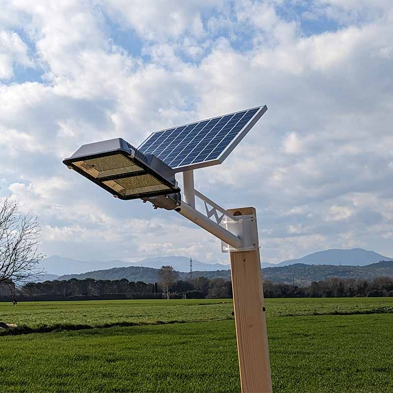

Las farolas inteligentes con placas solares son sistemas de iluminación urbana que combinan energía solar y tecnología inteligente. Sus paneles solares captan la luz del sol para generar electricidad, reduciendo el consumo de la red eléctrica. Además, incorporan sensores y conectividad que permiten ajustar el nivel de iluminación según la presencia de personas o vehículos, monitorear el consumo energético, e incluso reportar fallas de manera remota. Son sostenibles, eficientes y contribuyen a ciudades más seguras y ecológicas.